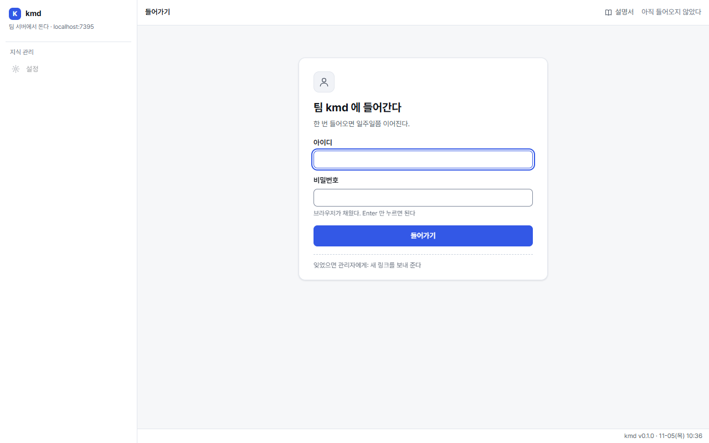
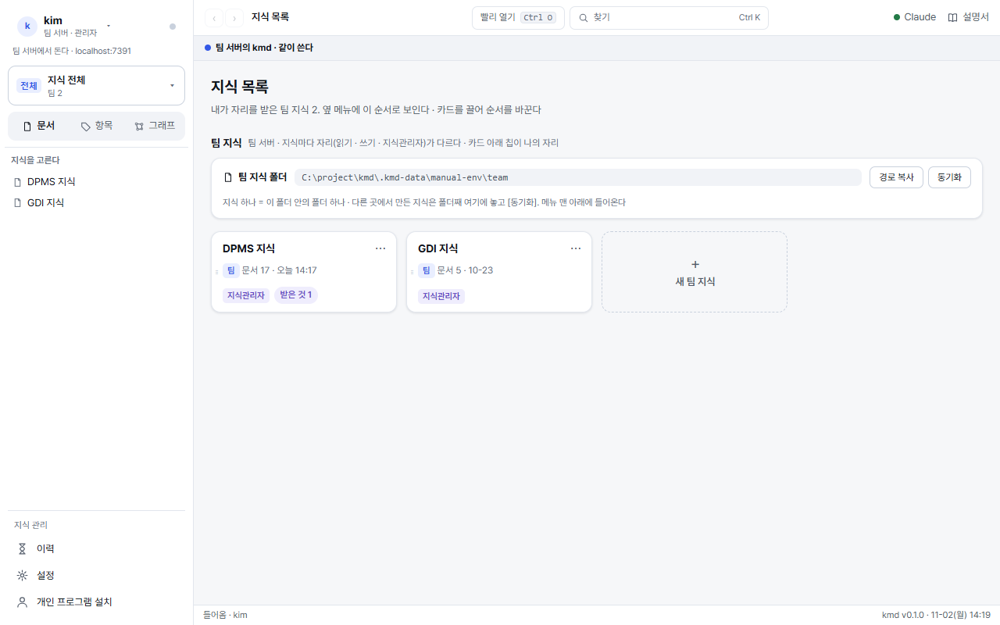
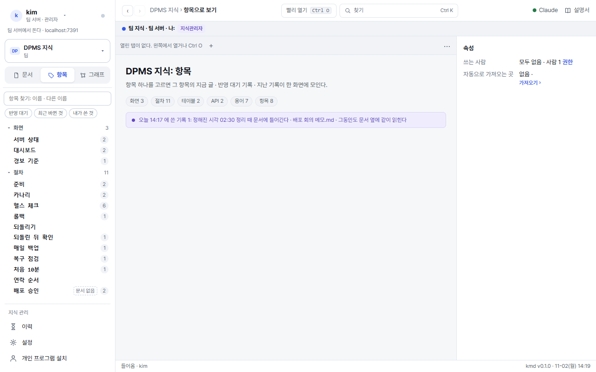
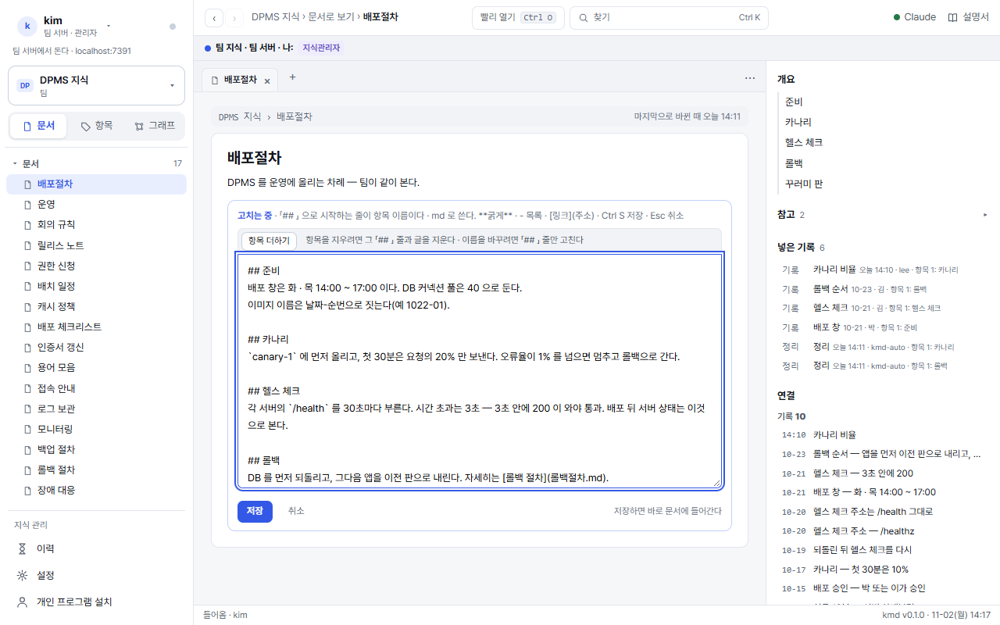
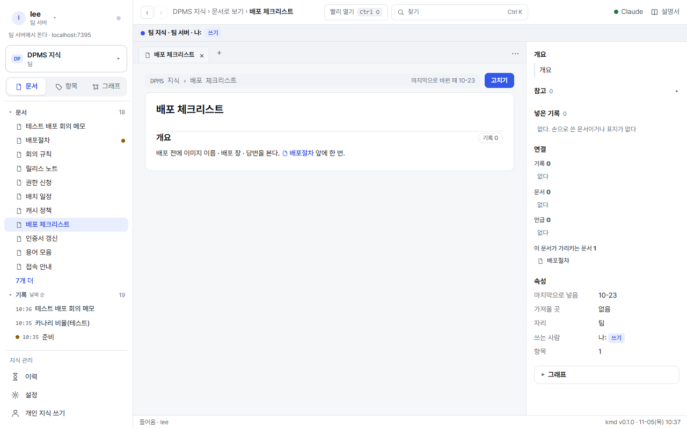
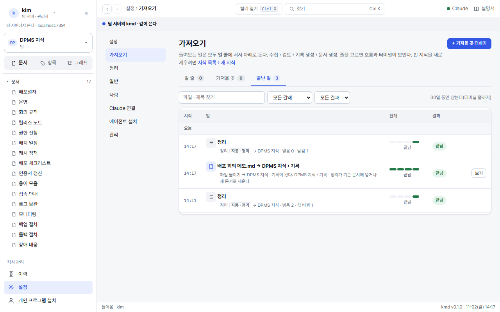
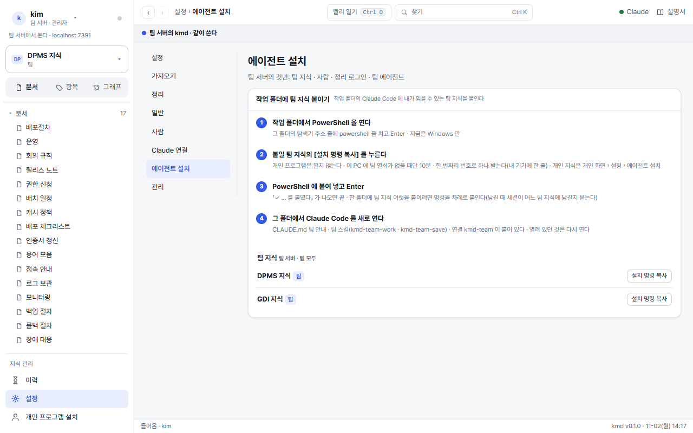

쓰는 사람: 팀 화면
팀 화면에서 팀 지식을 보고 · 찾고 · 고치고 · 파일을 넣는 법이다. 팀 지식은 팀 서버에 있고, 관리자가 자리를 준 지식만 보인다.
팀과 내 PC 의 지식(md 문서 · 기록)을 한 곳에서 읽고 고친다. Claude Code 세션도 같은 지식을 MCP 로 읽고 쓴다. 프로그램은 둘이다.
- 팀 프로그램(팀 서버 · 팀 화면): 팀 지식만. 아이디 · 비밀번호로 들어온다. 이 설명서.
- 개인 프로그램(내 PC 의 kmd · 개인 화면): 내 개인 지식만. 개인 프로그램 설명서.
두 화면은 서로를 부르지 않는다. 둘을 잇는 길은 Claude Code 연결 둘(kmd-team · kmd)과 개인 화면의 지식 보내기(개인 → 팀)뿐이다.
1처음 들어오기
- 처음 들어오기 링크를 연다관리자가 메신저로 보낸 링크(24시간 · 한 번)를 브라우저로 연다. 아이디는 링크와 함께 받는다.
- 비밀번호를 정한다브라우저가 제안하는 것을 써도 된다. 한 번 들어오면 일주일쯤 이어진다(12시간 쉬면 다시 묻는다).
- 지식 목록을 본다자리를 받은 팀 지식만 카드로 선다. 보여야 할 지식이 없으면 관리자에게 자리를 부탁한다.

2화면 둘러보기
 123456789
123456789- 지식 고르기: 지식을 바꾸거나 「지식 목록: 전체」 로 간다.
- 보는 법 셋: 문서 · 항목 · 그래프.
- 목록(나무): 문서 · 기록 · 첨부. 다른 화면에 가도 그대로다.
- 지식 관리: 이력 · 설정(가져오기 · 넣지 못함 · 일반 …) · 개인 지식 쓰기.
- 빨리 열기 · 찾기: Ctrl O · Ctrl K.
- 문서: 탭으로 여러 개 · 나란히 보기 Ctrl \.
- 고치기: 쓰기 자리 이상에만 선다.
- 오른쪽 칸: 개요 · 문서 · 기록 · 항목 · 속성 다섯 묶음(처음은 모두 접힘 · 지금 보는 것에 「지금」). 가운데에는 문서 내용만 둔다.
- 설명서: 이 설명서가 새 탭으로.
옆 메뉴(Ctrl [) · 오른쪽 칸(Ctrl ])은 접으면 아이콘 띠만 남는다. 칸 가장자리를 끌면 너비가 바뀌고, 두 번 누르면 처음 너비로 돌아온다. 문서 위 「기본 폭 | 넓게」 로 넓은 표를 한눈에 본다. 그래프는 본문 오른쪽 위 「그래프 ▾」 를 누르면 이웃이 뜨고, 점을 누르면 그것이 열린다. 이 모두는 이 브라우저에만 남는다.
위 띠의 파란 점 줄은 지금 내 자리(「팀 지식 · 팀 서버 · 나: 지식관리자」)를 늘 보인다. 저절로 하는 일이 멈추면 머리 오른쪽에 「⚠ 경고 n」 이 선다. 누르면 무엇이 멈췄고 어떻게 푸는지가 보인다.
지식 목록

3보는 법 셋
문서문서 하나 = md 파일 하나. 항목(## 머리)으로 나뉜다. 글 속 문서 · 항목 링크에 마우스를 올리면 미리보기.

항목테이블 · 화면 · API · 절차 · 용어처럼 이름 있는 것 하나하나. 종류별로 거르고, 「이 항목을 쓰는 곳」 이 같이 보인다.
 그래프
그래프항목 · 문서 · 기록이 어떻게 이어졌나. 점을 누르면 이웃만 남는다.
4찾기

| 단축키 | 하는 것 |
|---|---|
| Ctrl K | 찾기: 이름 · 다른 이름 · 문서 속 글 |
| Ctrl O | 빨리 열기: 문서 · 항목 이름으로 바로 |
| Ctrl P | 명령 창: 가져오기 · 이력 · 설정 · 지식 목록으로 가기 |
| Ctrl \ | 나란히 보기 |
| Ctrl S · Esc | 고치는 창에서 저장 · 그만두기 |
5고치기와 자리
팀 지식은 지식마다 받은 자리대로 한다. 받지 않은 지식은 목록 · 찾기 · 이력 · Claude Code 어디에도 보이지 않는다.
| 자리 | 할 수 있는 것 | 고친 것은 |
|---|---|---|
| 읽기 | 문서 · 기록 · 이력 · 그래프 보기 · 찾기 · Claude Code 로 읽기 | 고치기 단추가 흐리다(「쓰기 자리가 없다」) |
| 쓰기 | 문서 고치기 · 자기 기록 고치기 · 파일 · 폴더 넣기 · 가져오기 부탁 · 자기 기록 되돌리기 | 바로 문서에 들어가고 이력에 「고침」 으로 남는다. 항목 지우기 · 이름 바꾸기 · 저절로 채우는 표는 지식관리자가 한다 |
| 지식관리자 | 위 모두 + 항목 지우기 · 이름 바꾸기 · 남의 기록 고치기 · 넣지 못함(남의 기록까지) · 문서 다듬기 · 가져올 곳 · 지식 설정 · 권한 주기 | 바로 문서에 들어간다 |
| 총괄 관리자 | 모든 지식의 지식관리자 + 사람 · 팀 지식 세우기 · 백업 · Claude 연결 | 바로 문서에 들어간다 |

- 쓰던 글은 찾기를 열고 닫거나 다른 화면에 갔다 와도 그대로다. 저장하지 않고 닫았으면 다음 [고치기] 때 되살린다(이 탭 안에서).
- 들어온 것이 끝났으면(12시간 쉼 · 7일) 저장할 때 그 자리에서 비밀번호를 묻고 이어서 저장한다.
- 고치는 사이 누가 같은 항목을 고쳤으면 저장하지 않고 「읽은 뒤 누가 고쳤다」 를 보인다. 새 글을 다시 읽어 두었고 쓰던 글은 그대로다. 고친 곳을 확인하고 다시 저장한다.
- Claude 는 부르지 않는다. 값이 맞는지는 고친 사람이 본다. 이력의 「고침」 줄을 펼치면 항목마다 옛 값 → 새 값이 보이고 [되돌리기] 로 그 항목만 되돌린다.
기록 고치기(정정 기록)
기록을 열고 머리 오른쪽 [고치기]. 내가 쓴 기록은 쓰기 자리부터, 남의 기록은 지식관리자가 고친다. 창에 옛 값 · 새 값 · 고친 내용을 적고 저장한다.
- 원래 기록은 그대로 두고 「정정: 원래 기록」 기록을 새로 남긴다. 원래 기록 화면의 「정정」 칸에 「이 기록을 바로잡음」 으로 이어진다.
- 그 기록이 들어간 항목에 옛 값이 한 곳에만 있으면 그 자리에서 새 값으로 바꿔 넣는다(Claude 없음 · 「정정 기록을 남겼다 · 문서 n곳에 넣었다」).
- 옛 값이 여러 곳에 있거나 문장이 바뀌어 찾지 못하면 팀 일꾼에게 넘긴다(「팀 일꾼에게 넘겼다」). 넣으면 이력에 남는다.
- 그 기록이 들어간 항목이 없으면 정정 기록만 남고 「넣지 못함」 이 된다. 지식관리자가 넣을 곳을 고른다.

본문에는 확정된 지식만 쓴다. 회의 경위 · 초안 · 「언제 누가 바꿨나」 는 기록과 이력에 남고, 출처 줄은 kmd 가 문서 끝 「참고」 에 단다. 링크는 문서(x.md) · 항목(x.md#머리) · 바깥(https://…) 셋만.
6가져오기: 파일 · 폴더 넣기
설정 › 가져오기. 탭 셋: 일 줄 · 가져올 곳(지식관리자) · 끝난 일. 쓰기 자리가 있는 팀 지식이 하나라도 있으면 메뉴가 보이고, 파일은 화면 어디에 끌어다 놓아도 된다.
 1234
1234- 넣는 곳: 끌어다 놓기 · 파일 고르기 · 폴더 고르기 · 넣을 지식.
- 거르기 · 손잡이: 전체 · 도는 중 · 기다림 · 멈춤 · 확인. 동시에 도는 수 · 줄 멈춤.
- 자세히: 고른 일의 상태 · [보기](만든 기록 · 문서).
- 흐름: 네 단계와 단계 안 걸음. 단계를 누르면 터미널에 그 단계 줄만.
- md · txt · csv · html · json · docx · pptx · xlsx · hwpx · hwp · pdf 는 kmd 가 글로 바꾼다(목차 · 쪽 번호 · 되풀이 머리글은 뺀다).
- 파일마다 줄 하나가 서고, 팀 일꾼이 그 파일 하나로 기록과 문서 글을 한 번에 짓는다. 저장도 한 번이라 이력에 한 줄로 남는다. 못 넣은 곳은 기록만 남기고 「넣지 못함」 으로 보인다.
- 한 번에 20 파일까지(파일 하나 32MB). 21개부터는 보내지 않고 「많으면 Claude Code 에서 대량 넣기」 를 안내한다.
- 「원본 파일도 첨부로 둔다」 를 고르면 원본이 문서 첨부로 같이 들어간다(기본 꺼짐). 그림 파일은 이것을 골라야 들어간다.
- 글이 없는 pdf(스캔)는 「못 넣음」 으로 남는다. Claude Code 의 대량 넣기가 원본을 읽는다.
- 손잡이: 팀 일꾼에게 넘긴 파일은 [빼기] · [그만두기] 만 있다. 아직 짓지 않았으면 기록 없이 닫고, 짓는 중이면 초안을 넣지 않고 닫는다.
- 끝난 일은 30일 남는다(터미널 줄까지). 파일 · 제목으로 찾는다.

가져올 곳(지켜보며 맞추기)
문서 폴더 · 소스 코드(git) · DB 를 정한 때마다 다시 본다. 더하기 · 고치기는 그 지식의 지식관리자가 한다. 쓰기 자리는 [관리자에게 부탁] 을 누른다. 자세한 것은 지식관리자 설명서.
7이력

- 내 값이 바뀐 줄은 맨 위 값 바뀜(노랑). 저장 줄을 펼치면 넣은 항목마다 「옛 값 → 새 값」 이 보이고, 내 저장(지식관리자는 모든 저장)은 그 항목만 [되돌리기] 한다. 그 뒤 누가 다시 고친 항목은 되돌리지 않는다.
- 갈래 · 지식으로 거르고, 줄을 누르면 펼쳐 그 일 · 문서를 연다.
- 「새 기기가 이어졌다」 줄이 내가 한 것이 아니면 개인 지식 쓰기 › 내 기기에서 끊는다.
8Claude Code 에 팀 지식 붙이기
설정 › 에이전트 설치(누구나). 작업 폴더의 Claude Code 가 팀 지식을 읽고 남기게 한다.

- 붙일 팀 지식의 [설치 명령 복사]내가 읽기 자리 이상인 팀 지식만 고를 수 있다.
- 작업 폴더의 PowerShell 에 붙여 넣고 Enter그 폴더에 팀 스킬 셋(
kmd-team-work·kmd-team-save·kmd-team-import) · 연결kmd-team(.mcp.json) · CLAUDE.md 안내만 쓴다. 다른 연결 · 사람이 쓴 줄은 그대로다. 끝에 Claude Code 가 이 PC 에 있나 · 로그인했나를 한 줄로 알린다(없으면 깔고, 로그인하지 않았으면 터미널에서claude auth login). 팀 지식만 쓰면 개인 프로그램은 깔지 않아도 된다. - 그 폴더에서 Claude Code 를 새로 연다세션이 일 전에 팀 지식에서 사실을 찾아 읽고(kmd-team-work), 일이 끝나면 배운 것을 기록으로 남긴다(kmd-team-save). 남기기 전에 「어느 팀 지식에 남길까요?」 와 「이 값은 확정인가(머지 · 배포 · 결정)」 를 묻는다. 확정이면 기록과 바꿀 항목 글을 한 번에 저장해 검사를 넘은 것은 그 순간 문서에 들어가고, 아니면 메모로 남는다(문서는 그대로). 일 전에는 내 「안 넣은 메모 n · 넣지 못함 n」 을 한 줄로 알려 준다.
대량 넣기(폴더째)
팀 화면 파일 넣기는 한 번에 20개까지다. 폴더째 많은 파일은 붙인 폴더의 Claude Code 에 「이 폴더를 팀 지식에 넣어 줘」 라고 한다(스킬 kmd-team-import · 내 PC · 내 Claude 구독).
- 어느 팀 지식에 넣을지 묻는다쓰기 자리 이상인 팀 지식에만 넣는다.
- 처음 한 번 파서를 받는다파일을 글로 바꾸는 kmd 파서(몇십 MB)를 팀 서버에서 받아도 되는지 묻는다. 받은 것은
%USERPROFILE%\.kmd\parse에 두고, 판이 같으면 다시 받지 않는다. 팀 화면 · 개인 프로그램과 같은 바꾸기다. - 파일마다 기록과 항목 글을 한 번에 저장한다검사를 넘은 것은 그 순간 문서에 들어가고, 못 넘은 조각은 한 번 고쳐 다시 보낸다. 그래도 안 되면 설정 › 넣지 못함에 남는다(내 것은 내가 [다시 들이기] · 남의 것은 지식관리자). 글이 없는 pdf(스캔)는 Claude Code 가 원본을 직접 읽는다.
- 끝에 「넣음 n · 넣지 못함 n · 이미 넣음 n」중간에 멈췄으면 같은 폴더로 다시 시킨다. 넣은 파일은 「이미 넣음」 으로 건너뛴다. 원본 파일도 첨부로 두려면 「원본도 첨부」 라고 말한다(한 파일 8MB 까지).
팀 스킬이 새 판으로 바뀌면 세션이 저장 뒤에 「팀 스킬이 옛 판이다」 를 전한다. 저장은 된 것이다. 이 화면의 한 줄을 그 폴더에서 다시 붙여 넣고 Claude Code 를 새로 연다.
연결은 이 PC 의 기기 열쇠(Windows 자격 저장소 · %USERPROFILE%\.kmd\keys)로 팀 서버에 「누구인지」 알린다. 내 자리대로만 읽고 쓴다. 잃어버린 PC 는 개인 지식 쓰기 › 내 기기에서 끊는다.
9개인 지식 쓰기
옆 메뉴 맨 아래 개인 지식 쓰기(누구나). 팀 지식만 쓰면 개인 프로그램은 필요 없다(8절 에이전트 설치 한 줄이면 된다). 개인 지식을 쓰려면: 이 PC 에 개인 프로그램을 깔고(또는 새 판으로 올리고) 팀에 잇는 한 줄과 내 기기 목록이 여기 있다.

10나가기 · 밖으로 나가는 것
- 나가기: 왼쪽 위 내 이름 › 나가기(이 브라우저) · 모든 곳에서 나가기(다른 기기 · 브라우저도. Claude Code 의 기기 열쇠는 그대로).
- 팀 지식이 밖으로 나가는 길은 백업(지식마다 정한 git 자리)과 Claude 들이기 · 다듬기(팀 서버의 팀 일꾼 로그인)뿐이다. 「Claude 에 보내지 않음」 지식은 Claude 에 보내지 않는다.